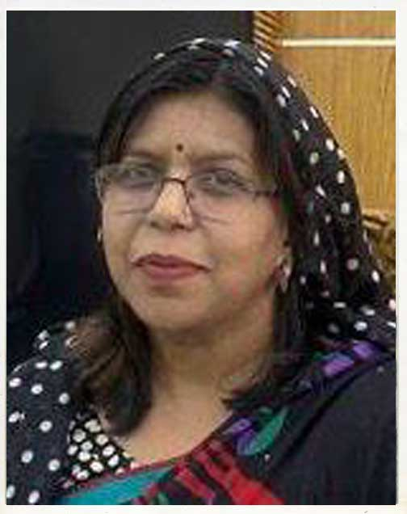

Overview
Pallabi Government College is a higher secondary and degree-level institution located in Pallabi Thana, Dhaka, Bangladesh. The college offers education at higher secondary, undergraduate, and graduate levels. It serves thousands of students from Mirpur and nearby areas.
Key Highlights
- Established to provide quality public education in Mirpur–Pallabi area.
- Affiliated with the National University of Bangladesh.
- Offers Higher Secondary Certificate (HSC), Degree, and Honours programs.
- Focus on both academic and extracurricular development.
Campus Life
The campus is known for cultural activities, debating clubs, and sports competitions. Students actively participate in national programs and community activities.
Image
